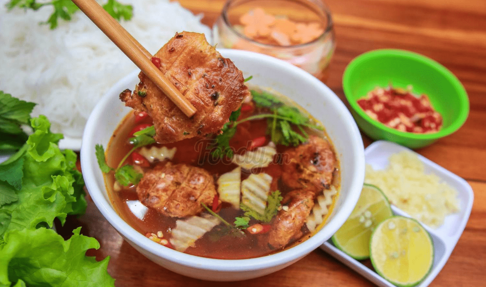
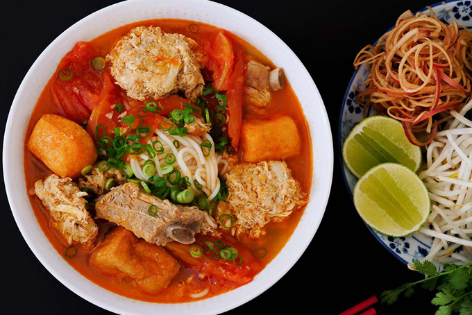

料理の本質
ブンーハノイ（北料理）
ブンチャハノイは、中央の人々のバーベキューヌードルによく似ています。 しかし、主な違いは、非常に手の込んだ処理です。 バンチャを作るための材料を購入するのも簡単です。 ここからそう遠くないところで、市場で見つけるものを買うことができます。 一般的に、パンチャは特別なものではありません。 各食材を一緒に楽しむとき、茶が色あせにくい印象を与えることは特別ではないからです。
ブンボーフェ（中央部）

ブンボーフエは、おそらくベトナム中部の春雨料理に関して頭に浮かぶ最初の名前です。 フエビーフヌードルはその大きな繊維で有名で、特別な「膨満感」をもたらします。 春雨の主な成分には、ビーフコーン、ポークソーセージ、後にカニロール、エビペーストが追加されています。 唐辛子の刺激的な香り、レモングラスの複雑な香り、そして少し強いソースが、人々を渇望させる味にしています。
カニ春雨(南部)
カニ春雨は、北方発の有名な料理です。 特別な味、おいしい、さわやかなおかげで、この料理はかなり早い時期に「ナムティエン」でした。 南部では、春雨麺は地域の好みに合うように変更されましたが、それでも料理の典型的な風味を保持しています。。